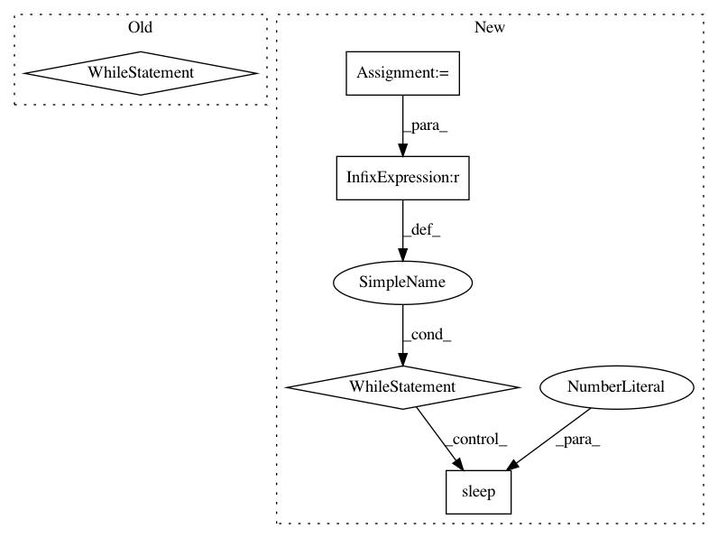

b048efa4f956b80266942caea6ee8b4311e1d17a,autokeras/classifier.py,ClassifierBase,fit,#ClassifierBase#Any#Any#Any#Any#Any#,119
Before Change
signal.signal(signal.SIGALRM, signal_handler)
signal.alarm(time_limit) // Ten seconds
try:
while True:
p = multiprocessing.Process(target=run_searcher_once, args=(x_train, y_train, x_test, y_test, self.path))
p.start()
p.join()
except TimeoutError:
if self.verbose:
print("Timed is up!")
return
After Change
p.start()
p.join()
start_time = time.time()
while time.time() - start_time <= time_limit:
p = multiprocessing.Process(target=run_searcher_once, args=(x_train, y_train, x_test, y_test, self.path))
p.start()
// Kill the process if necessary.
while time.time() - start_time <= time_limit:
if p.is_alive():
time.sleep(1)
else:
break
else:
// If break above the code in this else won"t run
p.terminate()
p.join()
def predict(self, x_test):
Return predict result for the testing data.
Args:
In pattern: SUPERPATTERN
Frequency: 4
Non-data size: 5
Instances
Project Name: keras-team/autokeras
Commit Name: b048efa4f956b80266942caea6ee8b4311e1d17a
Time: 2018-04-08
Author: jin@tamu.edu
File Name: autokeras/classifier.py
Class Name: ClassifierBase
Method Name: fit
Project Name: pantsbuild/pants
Commit Name: 7dcc1b532d21e47c98ba2422cab7d48360149f89
Time: 2013-10-06
Author: benjyw@gmail.com
File Name: src/python/twitter/pants/tasks/nailgun_task.py
Class Name: NailgunTask
Method Name: _await_nailgun_server
Project Name: pantsbuild/pants
Commit Name: 6101d42a47f4dca09a862090f7665bf83373f9d8
Time: 2013-07-29
Author: benjy@foursquare.com
File Name: src/python/twitter/pants/tasks/nailgun_task.py
Class Name: NailgunTask
Method Name: _await_nailgun_server